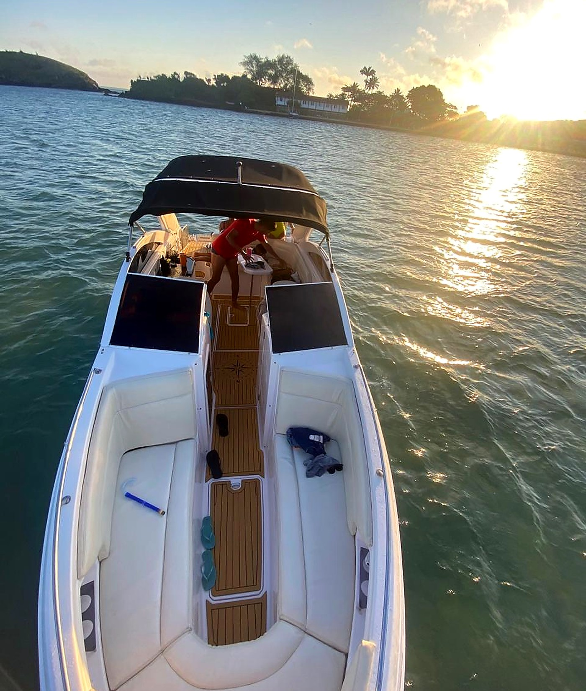
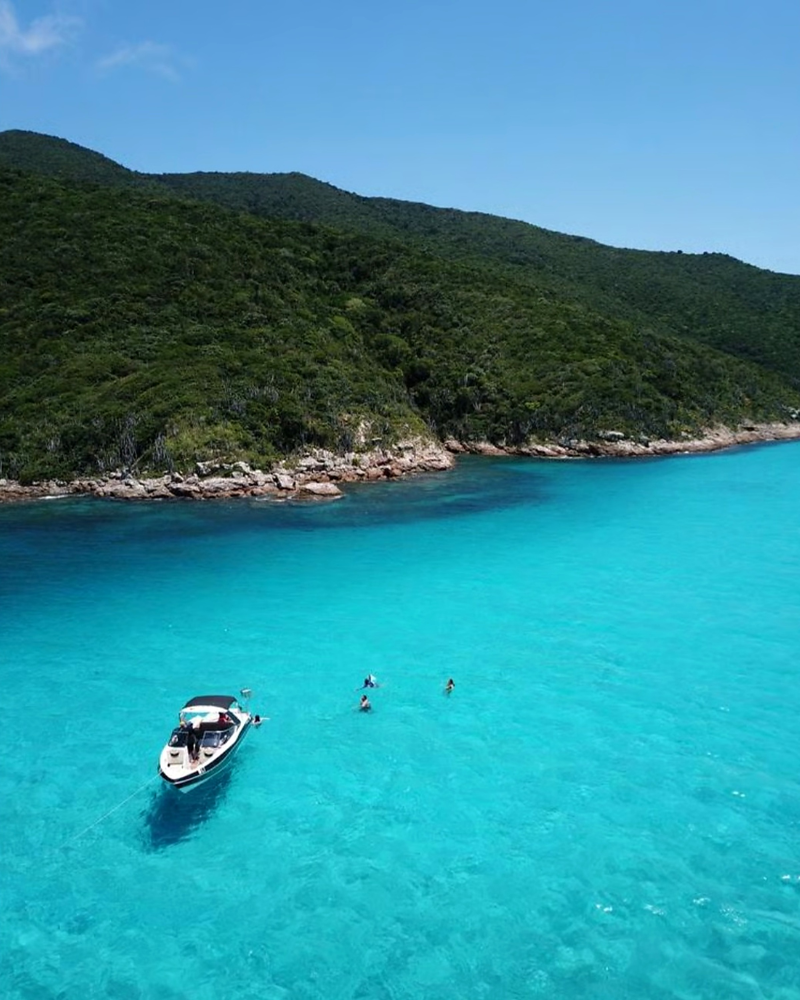
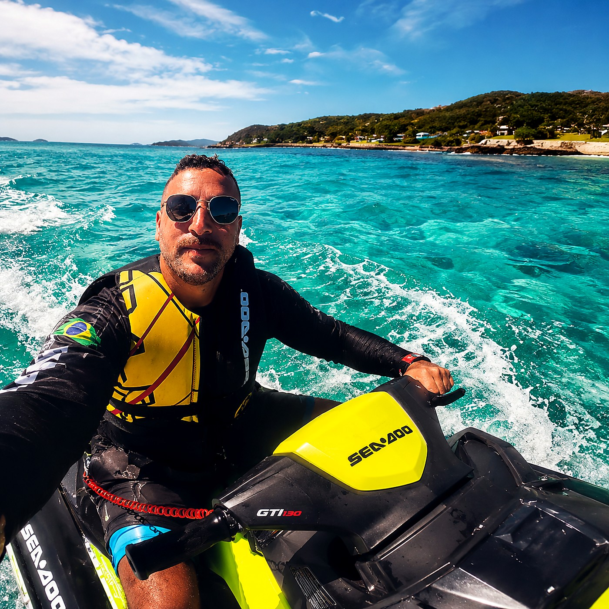
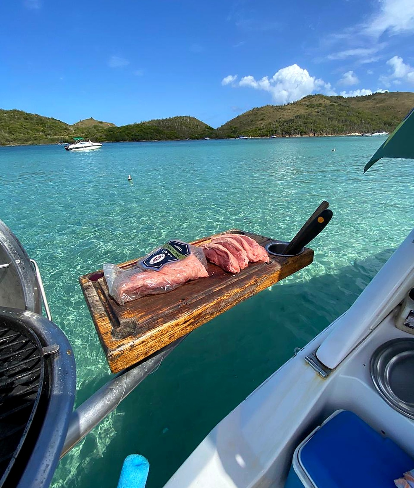
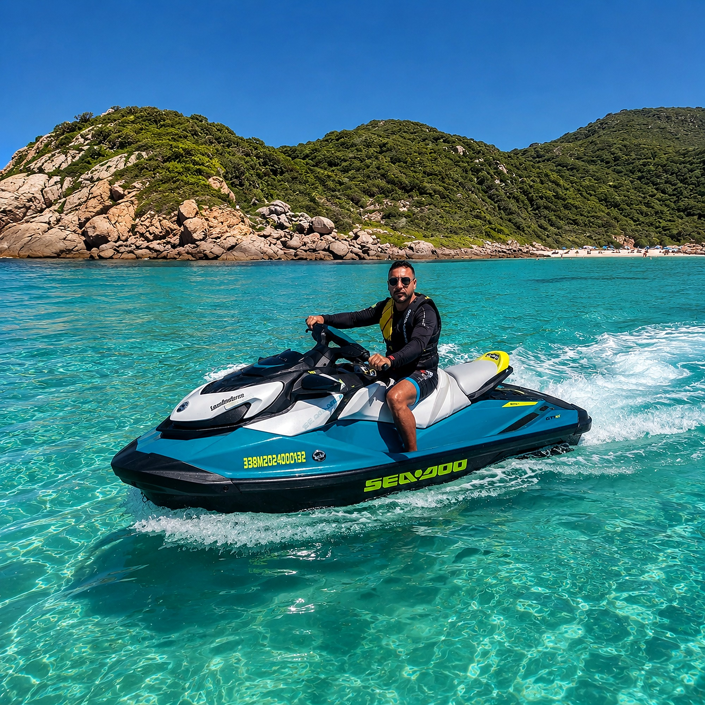
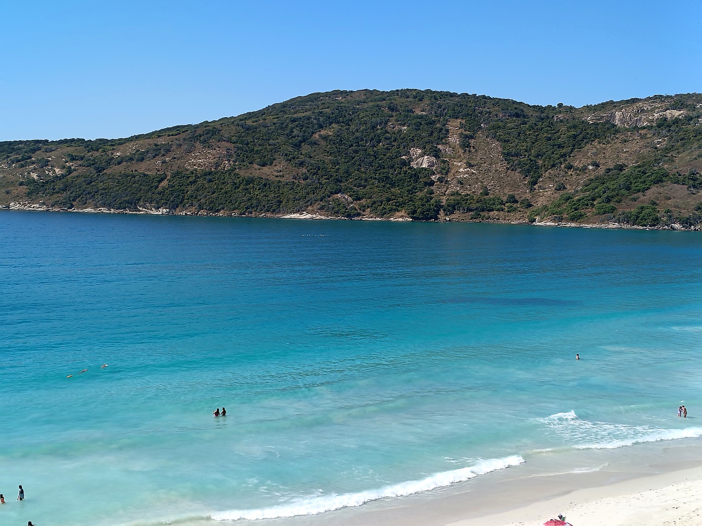
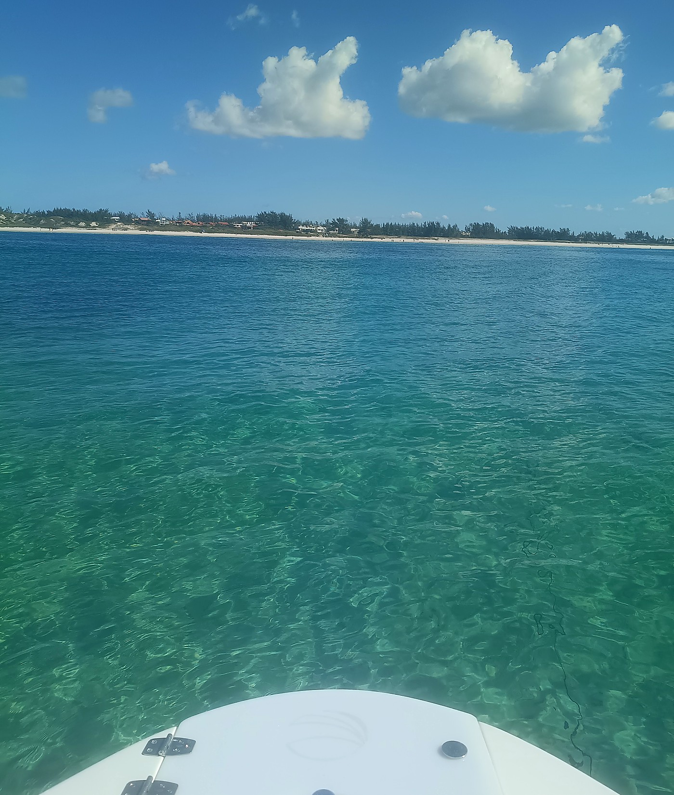
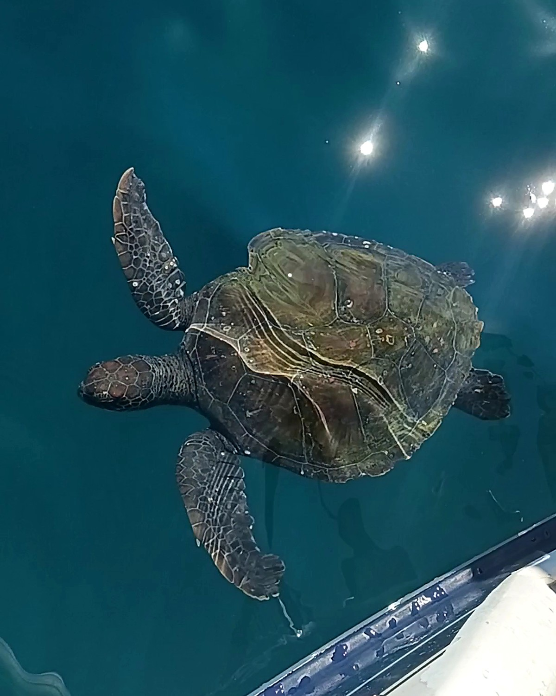
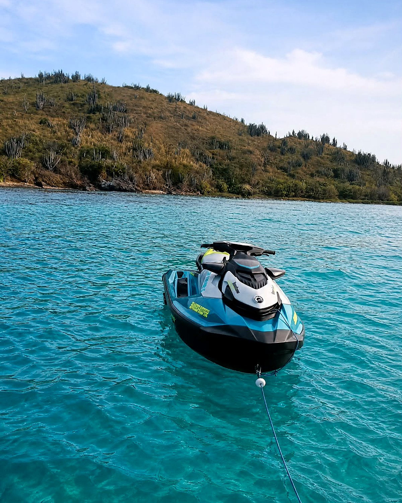

O mar cristalino de Cabo Frio de lancha e Jet Ski.
Conforto na lancha privativa e adrenalina no Jet Ski saindo da Ogiva.

Recepção & Segurança no Mar
Atendimento direto com Luis Fernando.
Embarcações impecáveis, Jet Skis Sea-Doo novos e roteiros exclusivos pelas enseadas mais cristalinas de Cabo Frio.
★ 5,0 Nota Máxima no Google
Saída da Ogiva · Cabo Frio
Marinheiro Incluso
Nossas Experiências
Escolha a embarcação ideal para o seu grupo.
Alugue só a lancha, só o Jet Ski ou combine os dois no mesmo passeio.


Paraísos de Cabo Frio
Paradas de água transparente.
Navegação tranquila saindo da Ogiva pelos cartões-postais da Região dos Lagos.

Ilha dos Papagaios & Enseada do Mimi
Piscina natural de água azul-turquesa perfeita para mergulho e churrasco.

Ilha do Japonês & Canal do Itajuru
Águas rasas e cristalinas ideais para famílias, crianças e fotos incríveis.

Mergulho com Tartarugas
Encontros frequentes com tartarugas marinhas ao lado da lancha.

Praia do Forte & Farol da Lajinha
Costeira histórica de Cabo Frio e pôr do sol inesquecível no canal.
Reserva Direta sem Taxas
Monte seu passeio e chame no WhatsApp.
Escolha sua opção abaixo e receba a disponibilidade na hora com o Luis Fernando.
1. O que você prefere?
2. Roteiro preferido
3. Quantas pessoas?
Adultos
4
Crianças
0
4. Extras a bordo
Nota 5,0 ★ no Google
Quem já navegou com a Maré Azul.
★★★★★
"Experiência incrível do início ao fim! A lancha estava impecável, o roteiro foi muito bom e tudo feito com muita segurança."
Arthur França Avaliação verificada no Google★★★★★
"Excelentes profissionais, ótimo passeio! Equipe preparada, barco e Jet Skis super novos."
Vinicius Fazolo Avaliação verificada no Google★★★★★
"Passeio maravilhoso, o pessoal é muito bacana e prestativo. Quero agradecer ao Luis Fernando pelo carinho e dedicação!"
Sergio Luiz C. Santos Avaliação verificada no Google
Ponto de Embarque
Abrir localização no Google Maps
Saída na Ogiva, Cabo Frio.
Endereço Oficial
Rua dos Camarões, 117 — Ogiva, Cabo Frio - RJ (CEP 28924-150)
Horário de Atendimento
Todos os dias, das 08h00 às 20h00
WhatsApp Direto
(22) 99937-4547 · Luis Fernando
Como funciona o Combo Lancha + Jet Ski?
Você e sua turma aproveitam todo o conforto da lancha privativa com som e churrasco, enquanto o Jet Ski Sea-Doo acompanha o passeio nas paradas para quem quer pilotar e curtir nas águas cristalinas.
Posso levar bebidas e carnes para o churrasco?
Sim! Nossa lancha tem churrasqueira, tábua e cooler a bordo. Você leva o que preferir consumir e nosso marinheiro prepara o churrasco na parada da ilha.
O passeio é seguro para crianças e idosos?
Sim! O embarque na Ogiva sai direto pelas águas calmas do Canal do Itajuru e Ilha do Japonês, com coletes homologados e acompanhamento profissional durante todo o trajeto.